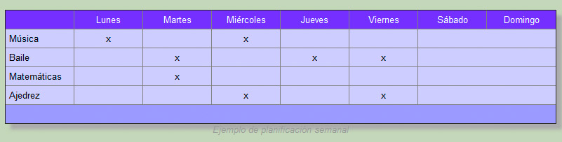
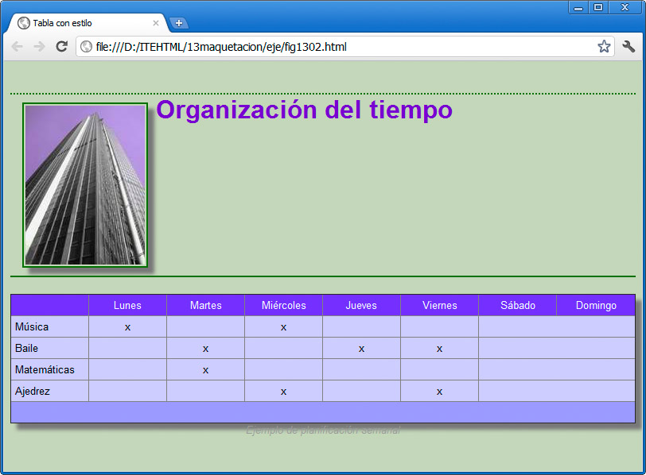
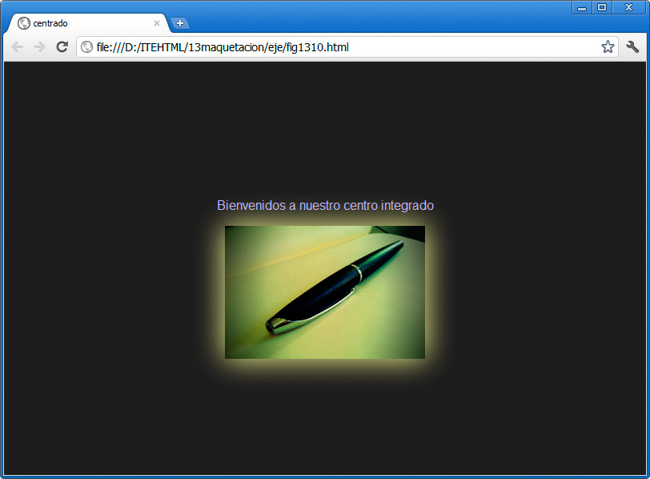

table {box-shadow: 8px 8px 6px #aaaaaa; }
Los valores que conforman la sombra son similares a los que vimos para las sombras de texto, es decir, desplazamiento horizontal, vertical, difuminado y color de sombra.
En el caso de la tabla, con una sombra clara, obtenemos el resultado de la figura:

Este tipo de efectos combinan muy bien con las imágenes, como se puede observar en la figura siguiente:

Nota
Es conveniente emplear siempre los mismos valores de sombra dentro de una determinada página web. De otro modo el efecto que se produce quedaría descompensado, al no quedar definido el origen de la luz que simula la proyección de sombras.
Actividad 4
Probaremos a aplicar bordes redondeados o sombras a diferentes elementos de nuestra página.
Brillo
Desde siempre el efecto de sombra se puede emplear también para producir un efecto de brillo (se suele denominar glow en las aplicaciones en inglés). Usando una línea similar a la siguiente podemos conseguir un efecto parecido al de la figura:
img{ box-shadow: 0px 0px 60px #FFFF99;}

Tenemos una sombra sin desplazamiento, con una difusión muy amplia, de 60 píxeles, y sobre todo con un color blanco o amarillo. Esos efectos hacen que parezca que el objeto está iluminado por detrás.